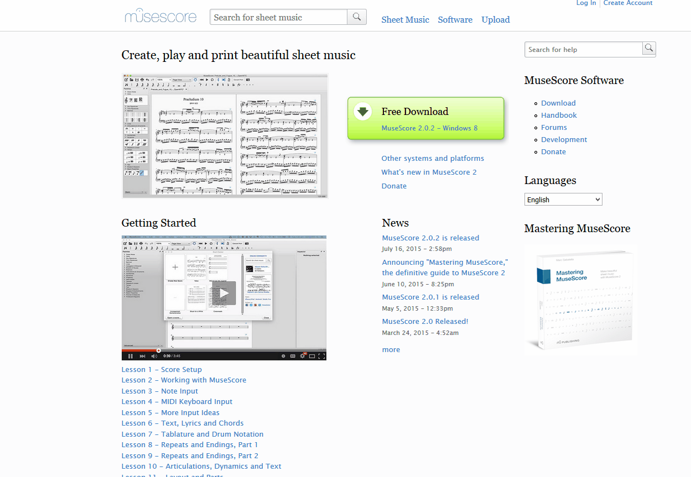
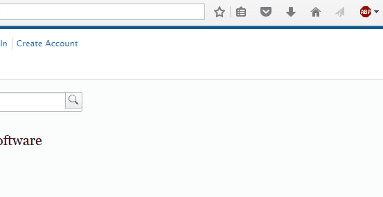
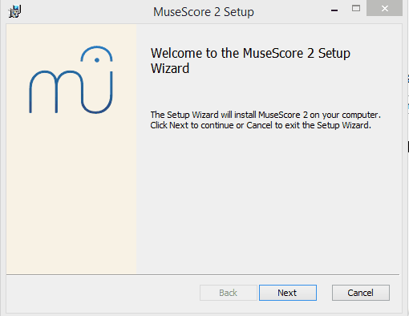
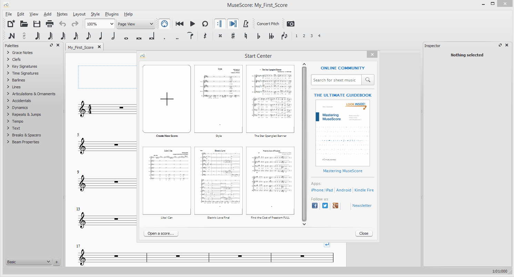
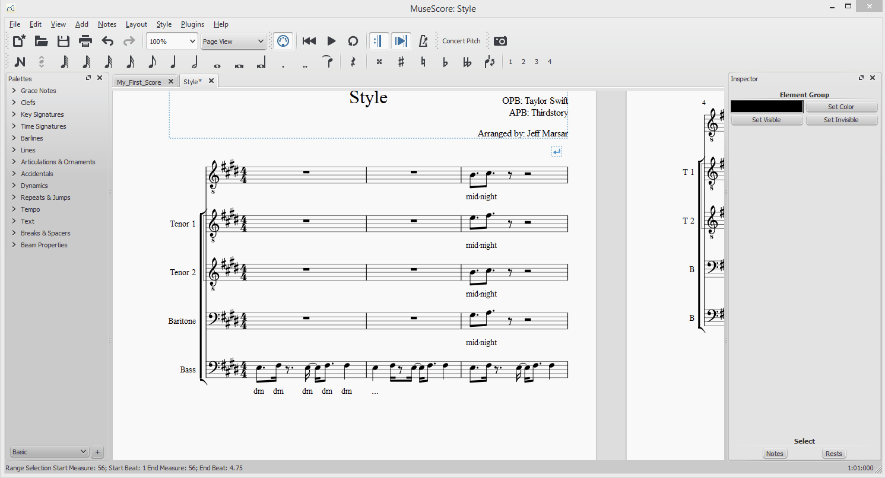
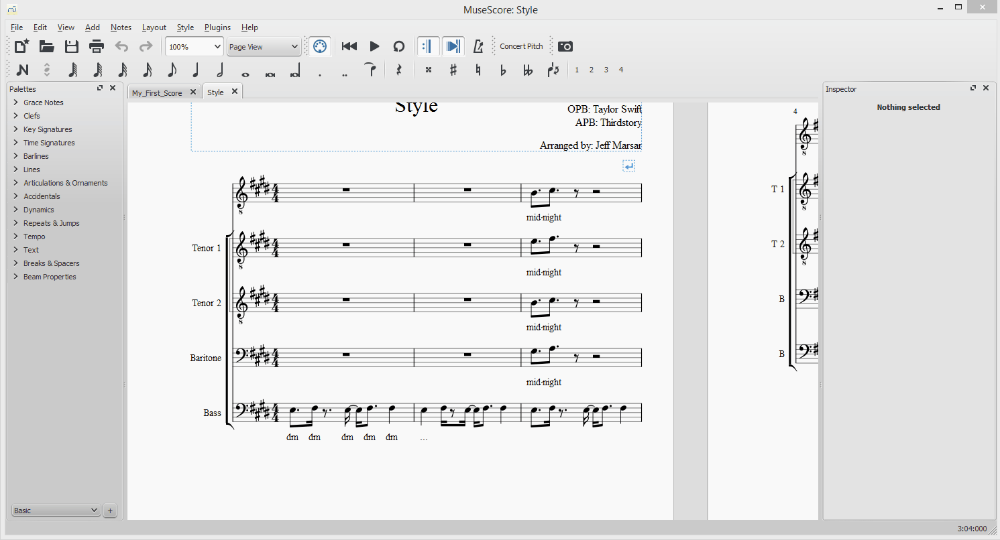
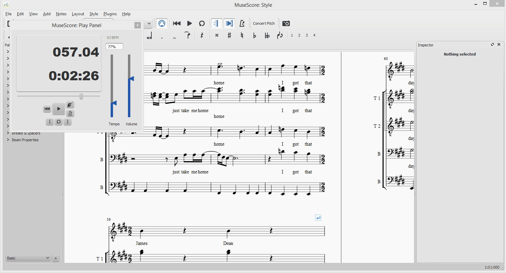
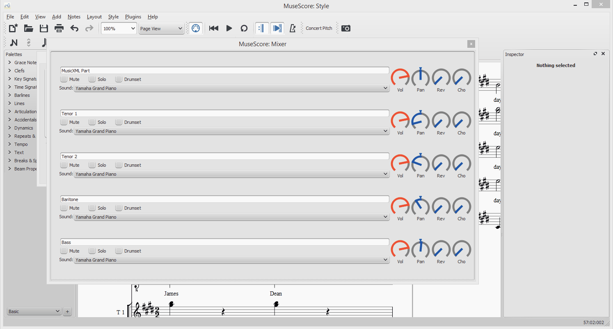

Step 1: Use your favorite web browser and go to musescore.org

Step 2: Click on the handy download link. It will download, so save the file somewhere.

Step 3: Go to wherever you downloaded the file and run it.

Step 4: Follow the instructions and you're all good to go!

Step 1: Open up a downloaded project (i.e., from the drive) by clicking File->Open and going to the project. Open up either a .mscz file or a .xml file
Step 1: If you just want a quick listen, click the play button at the top of the window.

Step 2: For more precise control, open up the "Play Panel" by clicking View->Play Panel

Step 3: With the Play Panel, you can change the tempo, change the volume, or move around to different measures within the song.

Step 4: For precise controls on the voice parts, open up the "Mixer" by clicking View->Mixer

Step 5: You can now use the mixer to change the volumes of certain parts, mute or solo parts, change which instruments play each part, etc.